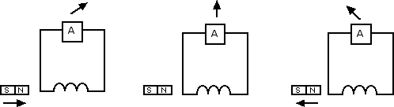

Correnti indotte
Esperimenti di Faraday
Abbiamo visto nelle precedenti sezioni che la corrente elettrica che circola in un filo è in grado di generare dei campi magnetici. In questa sezione vogliamo vedere se vale il viceversa, ossia se, usando in maniera opportuna i campi magnetici, si possono generare delle correnti elettriche.
Partiamo da alcune osservazioni qualitative che vogliono riprodurre in breve gli esperimenti che furono per la prima volta eseguiti da Faraday.

Faraday costruì un circuito elettrico privo di generatore ma dotato di un solenoide e di un amperometro. Egli notò che, avvicinando un magnete al solenoide, nel circuito l'amperometro segnalava passaggio di corrente (figura di sinistra). Tenendo il magnete fermo non c'era passaggio di corrente nel circuito (figura di centro). Allontanando il magnete si notava invece passaggio di corrente nel verso opposto (figura di destra). Dunque il moto del magnete rispetto al circuito elettrico genera un passaggio di corrente. Inoltre l'intensità di corrente è tanto maggiore quanto minore è il tempo in cui avviene lo spostamento del magnete rispetto al circuito.
Lo stesso fenomeno avviene se sostituiamo un magnete con un altro solenoide percorso da corrente. Non dobbiamo stupirci di questo perché sappiamo che un solenoide percorso da corrente genera un campo magnetico al suo interno. È interessare però notare come, se lasciamo fermo il solenoide ma cambiamo il campo magnetico al suo interno (ad esempio variando la corrente che lo percorre), si nota comunque passaggio di corrente nel circuito privo del generatore. Analogamente c'è passaggio di corrente se ruotiamo o trasliamo il circuito stesso rispetto al magnete (o al solenoide percorso da corrente).
In tutti questi casi è cambiato il valore del flusso del campo magnetico attraverso la superficie delle spire del solenoide: ΦB = N · A · B · cos α, dove N è il numero delle spire del solenoide, A è l'area di una spira, B è l'intensità del campo magnetico ed α è l'angolo fra la normale al piano della spira e il vettore campo magnetico (il simbolo Φ con cui si indica il flusso in fisica corrisponde alla lettera greca fi maiuscola). Quando avviciniamo o allontaniamo il magnete (oppure aumentiamo o diminuiamo la corrente nel solenoide esterno al circuito) aumentiamo o diminuiamo il campo magnetico B concatenato con il solenoide e dunque aumentiamo o diminuiamo il flusso ΦB. Quando invece ruotiamo il magnete oppure il circuito variamo il flusso perché varia l'angolo α tra la normale al piano delle spire e il campo magnetico. Ovviamente ai fini della variazione è ininfluente che sia il magnete o il circuito a muoversi. L'importante è che ci sia un moto relativo tra il magnete e il circuito.
Il flusso del campo magnetico quantifica la facilità con cui le linee di campo magnetico attraversano la superifcie di area A. Se α = 0 le linee di campo sono perpendicolari alla superficie e il flusso è massimo. Se invece α = 90° le linee di campo sono parallele alla superficie e il flusso del campo magnetico è nullo. L'unità di misura del flusso del campo magnetico è il weber (simbolo Wb). Dalla definizione di flusso segue che 1 Wb = 1 T · 1 m2.